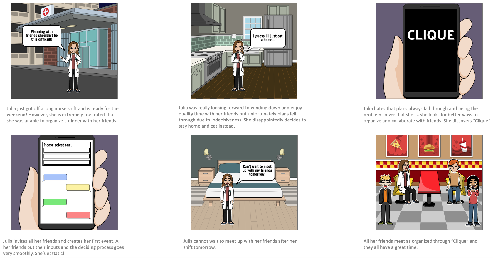

The Problem
Everyday, millions of millennials go out to eat with their friends but encounter the difficulty of planning their hangouts. Trying to plan everything on your own can be a daunting and exhausting task.
The Insights
Through interviews I learned the biggest frustrations of planning with friends.
- Deciding where to eat amongst friends is extremely difficult
- A lot of time is wasted due to indecisiveness and back and forth organizin
- Often times, plans never go through due to the difficulty of organizing and deciding where to eat
I distilled my research insights into a guiding statement to frame the development of solutions.
How might we simplify the planning process of eating out with friends�?
The Solution
Allow friends to give suggestions and vote for their preferred choice in a group chat. If user has no preferred choice, a roulette wheel option can be voted for which randomly selects where to go eat based on suggestions.


Discovery
Easily digestible cards helping users discover new resturants to suggest

Bookmarks
Save and bookmark newly discovered resturants to suggest at a later time

Resturant View
See additional information about the resturant such as reviews and photos. Easily create an event and suggest chosen resturant to friends

Group Chat
Chat with friends about event and vote for preferred choice using the event details dropdown